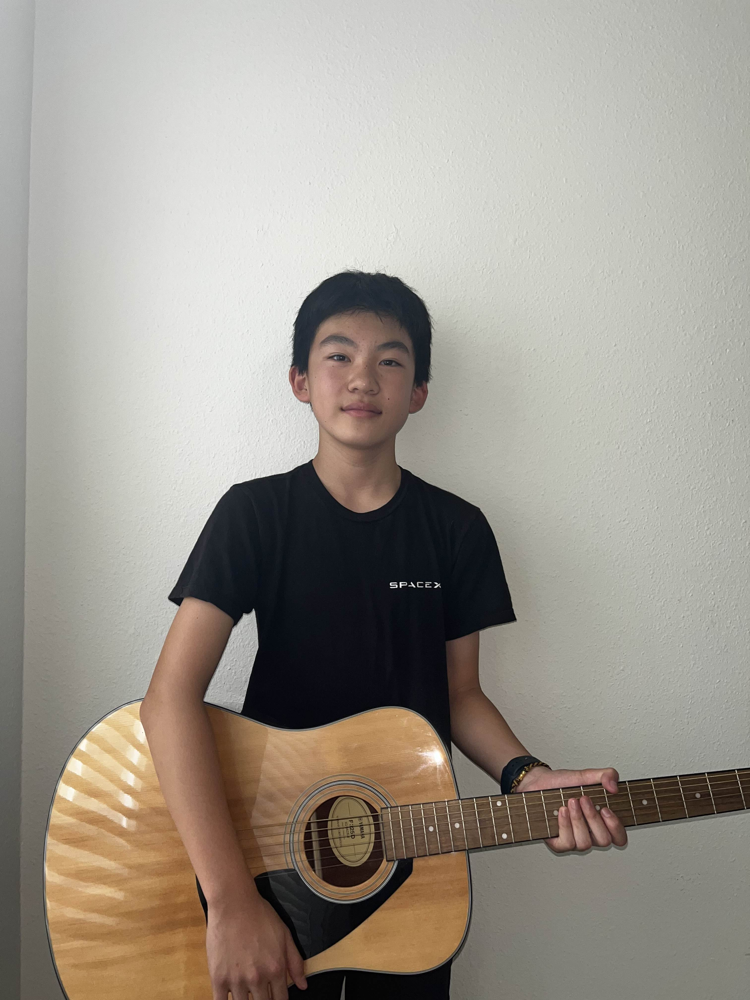
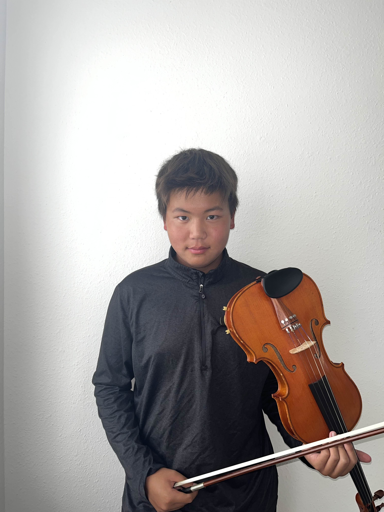

Sean: Tech Lead
Sean is our Head Of Technology, Co-Founder, and Viola Tutor. He has 8 years of Viola and Violin experience. His other hobbies include programming and playing hockey.

Nathan is our Founder and Piano Tutor. He has 9 years of piano experience and 3 years of viola experience. His other hobbies include art, long distance running, and basketball.
Sean is our Head Of Technology, Co-Founder, and Viola Tutor. He has 8 years of Viola and Violin experience. His other hobbies include programming and playing hockey.
Bryan is our Co-Founder, Violin Tutor, and Cello Tutor. He has 8 years of violin experience and 3 years of cello experience. His hobbies include swimming
Sameer is our Co-Founder and Graphic Designer. His hobbies include 3d modeling, math, and guitar.